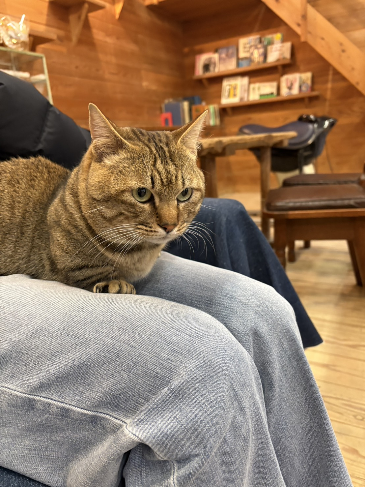

ネコ さん🐱

渋川動物園のネコさん!
ひとなつっこくて、ちいさなあしでテクテクよってきてくれたよ！
ゴロゴロないててかわいい
渋川動物園のネコさん!
ひとなつっこくて、ちいさなあしでテクテクよってきてくれたよ！
ゴロゴロないててかわいい
渋川動物園のウサギさん!
エサにむかってはしってくる！
ピョコッとたってるのがかわいい
渋川動物園のクジャクさん!
いつもいりぐちちかくをウロウロしてるんだって！
こんなにちかくでみれることはめずらしい！
渋川動物園のウシさん!
おおきくてこわいとおもったら、クリクリしたやさしいめでみつめてきた！
なでるとよろこんでくれたよ！
姫路市立動物園のキツネさん!
しっぽがフサフサ・モフモフでおおきいよ！
いぬみたいでかわいい！なでたい
神戸市立六甲山牧場のヤギさん!
いつもいりぐちでむかえてくれるよ！
ひとなつっこくて、なでて～ってスリスリしてくるよ！
神戸市立六甲山牧場のヒツジさん!
しきちないをじゆうにはしりまわってる！
むれにまぎれていっしょにはしってみたら、おともだちになれるかも！？
神戸市立六甲山牧場のモルモットさん!
クリクリおめめと、ちいさなからだがかわいい！
いろんなこがいるけど、みんなぜんぜんちがうかわいさがあった！
神戸どうぶつ王国のレッサーパンダさん!
おりがないからすごくまじかでみれたよ！
かっぱつなこたちばかりで、ファンサいっぱいしてくれた！せかいいちかわいい
神戸どうぶつ王国のアリクイさん!
ぼくたちのあたまのうえにあるきを、ノッソノッソあるいてきた！
しいくいいんさんにあまえたり、ごはんにがっつくすがたもかわいい！
ドイツの森のカンガルーさん!
ひとがはいっちゃだめなところからでてきたらさわれる！
ひなたぼっこでポカポカしててかわいい
フクロウカフェのフクロウさん!
はねがおれやすいからなでるときはちゅうい！
やさしくなでてあげると、スリスリしてきてかわいかったよ！
ドイツの森のウマさん!
ひなたぼっこちゅうで、ねころがってるのがかわいい！
こんなにリラックスしたウマさんははじめてみたよ！
連休おすすめ動物園 10選
ワンちゃんと行けるカフェ特集
【イベント情報】あの動物がやってくる！
雑誌「ＸＸＸＸＸＸ Vol.10」に掲載していただきました
【イベント情報】譲渡会のご案内
【イベント情報】保護犬とのふれあい会
【開店・閉店】新たに猫カフェができます
牧場でのんびりアイス･ジェラート特集
愛犬と一緒に泊まれる宿 7選
【開店・閉店】ペットショップ「ＸＸＸＸＸＸ」がオープン